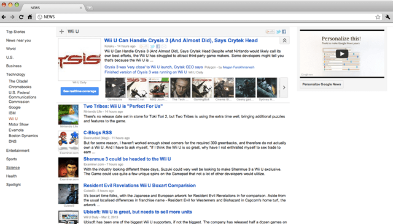
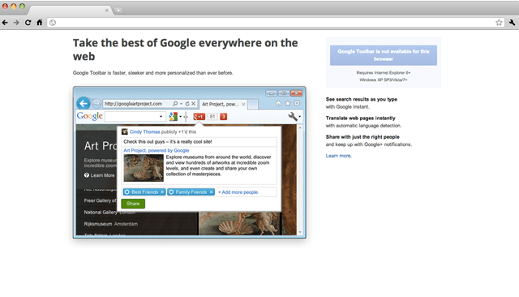
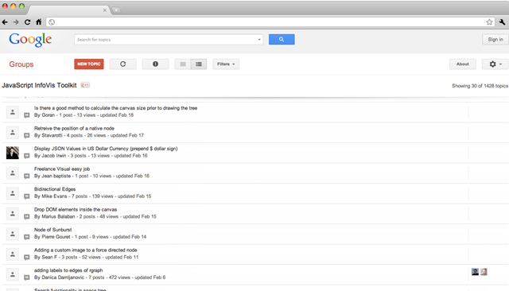
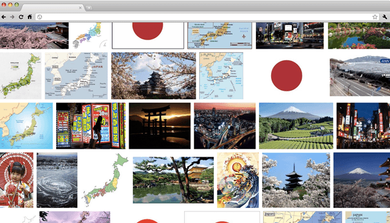
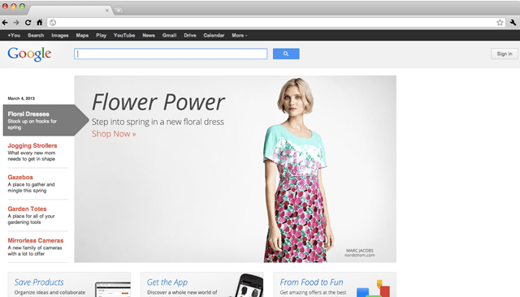
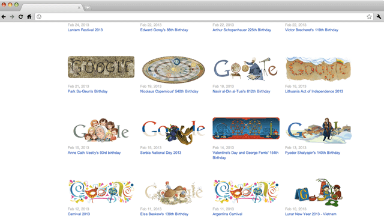
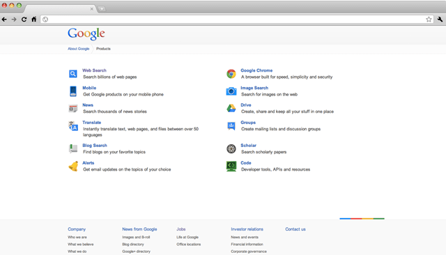

Work is hard and you need a break. A sun-soaked vaction is just the ticket, but where to begin? With Google there's a world of helpful, time-saving feetures right at your fingertips. To see how these free services can help you find what you're looking for faster, tag along as we plan a tropical vacation, or go straight to Google Services and Tools.

Get the latest from Google News.
The destination determined, you decide to visit Google News to brush up on the very latest, so you'll be able to converse with the natives intelligently about the events of the day. Search and browse 4,000 leading news sources from around the world, with headlines and photos continuously updated automatically throughout the day. Click on a headline to be taken directly to the original source of the story you want to read.

Take the Google Toolbar with you.
Realizing you'll hit a lot of websites before you hit the beach, the first thing you pack is the Google Toolbar. Add it to your Internet Explorer and you can take Google with you anywhere on the web. It takes only seconds to install and enables you to easily use Google without having to return to the homepage. Download the Google Toolbar

Visit Google Groups for great advice.
It's always helpfull to have a guide when planning a trip, so you check in with a couple million experts. Google Groups is a searchable database of more than 800 million Usenet posts on every imaginable topic, including unspoiled islands and low-cost airfare. Ask questions and read comments in Usenet discussion forums. Explore topics in detail by perusing posts that contain amateur advice, professional recommendations and everything inn between.

Check out the views at Google Images.
Refusing to allow a small setback like bad weather to dampen your spirits, you take a visual tour of other potential warm weather hot spots using
Google Images where you can search more than 400 million photos, artworks and other graphics. You enter the query "tropical vacations" and click a thumbnail to see a largest image and the web page on which it's located. You enter the query "tropical vacations" and click a thumbnail to see a largest image and the web page on which it's located.

Find great products with Product Search.
Having decided to soak you stress away in a home hot tub, you use Product SEarch, the new product search service from Google, to find the best deal on exactly the model you want to buy. Froogle's objective results take you directly to the store selling the tub you're hot for. Use Froogle to locate the best deal on the exact products you want. Searching through millions of relevant web sites, Google pinpoints sites offering any specific product you select, enabling you to save money and time.

For a quicker trip, try "I'm Feeling Lucky".
You've found the perfect solution to melt your stress. All you need now are some tunes to set the mood. You type your favorite radio station's call letters into the Google search box and hit the button that says "I'm Feeling Lucky," which takes you directly to the first web page Google returned from your query. When you know the exact name of the company, subject or person you're looking for, it's a pretty safe bet Google will deliver the site you want as the first result. Try it for yourself and see how lucky you really are..

Get equipped to search even further.
As you soak away in your bubbly corner of paradise, you consider how far Google was able to take you and contemplate other ways Google can improve your existence. You determine to learn more about Google by reviewing the
Gooogle Search Features page. Starting … tomorrow.